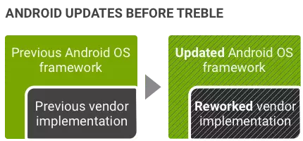
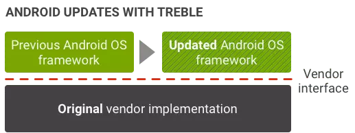

Overview
来源
为了能更快的将设备升级到新的Android版本，Android O 开始新引入了 Project Treble，Project Treble 适用于搭载 Android O 及后续版本的所有新设备。
(1) Android 7.x 及更早版本中没有正式的Vendor层接口，因此每次更新系统都相对耗时和困难：

(2) Android O 之后，Treble 提供了稳定的Vendor层接口，供设备制造商访问 Android 代码中特定于硬件的部分，这样就可以只更新框架层，减少升级系统带来的成本和困难：

作用
为了确保Vendor层实现的前向兼容性，新的Vendor层接口会由供应商测试套件 (VTS) 进行验证，该套件类似于兼容性测试套件 (CTS)。
通过 CTS 测试，确保了 APP 与 Android Framework 之间有一致的调用接口（API），这使得 APP 开发者编写的同一款程序可以运行在不同系统版本（向前兼容）、不同硬件平台、不同厂商制造的不同设备上。
VTS 类似 CTS，通过对 Vendor Interface 进行测试，确保同一个版本的 Android Framework 可以运行在不同 HAL 上，或不同 Android Framework 可以运行在 同一个 HAL 上。
通过这样的 Framework / HAL 分离设计和接口一致性保证，也使得 8.0 版本之后的 Android 系统在进行升级时，可以直接对 Framework 进行升级而不用考虑 HAL 层的改动，从而缩短了用户手上设备得到系统升级 OTA 推送的时间。
环境搭建
1 | 1） 安装 Python 开发包 |
测试前提GSI
GSI介绍
GSI是Google AOSP System Image的简称，在进行VTS测试之前，要使用user版本关闭verified boot后刷入GSI，VTS测试用的GSI由谷歌释放。
如VTS r6版本的GSI镜像：
GSI方法
1 | GSI方法（先adb remount）： |
1 | PS：在开发者选项查看oem unlocking选项是否已经解锁，如果未解锁可能是因为： |
测试命令（同CTS相似）
启动vts(测试包从源码编译或者Google Android Developer官网查找)
./vts-tradefed
测试（跑测需要网络稳定）
1
2
3
4
5
6
7
8
9
10
11全局测： run vts
模块测试： run vts -m 模块名
某个测试项： run vts -m <模块名> -t <测试项名>
可用选项:
run vts -s <device_id> --logcat-on-failure --screenshot-on-failure --shard-count <shards>
'-s <device_id>'：可指定运行测试的设备
'--logcat-on-failure'：当测试失败时捕获logcat
'--screenshot-on-failure'：当测试失败时截取屏幕截图
'--shard-count <shards>'：用多个设备上同时跑测，可节省时间查看list命令
1
2
3查看设备信息： l d
查看命令信息： l c
查看跑测结果： l r